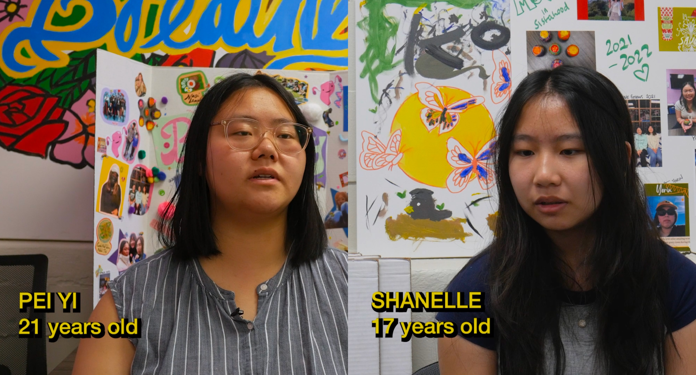
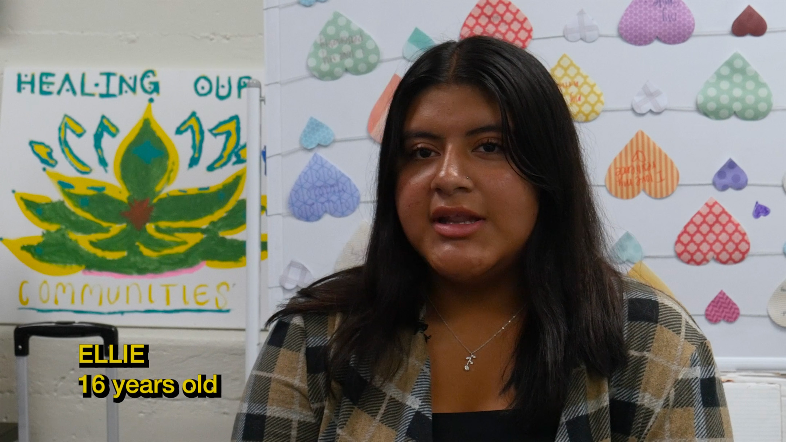

Srei is a short documentary produced for Banteay Srei–a one-of-a-kind organization within Oakland Chinatown’s Asian Health Services that was founded in the early 2000s by women from Oakland’s Southeast Asian community in response to high levels of recruitment and sexual exploitation among Southeast Asian girls.
Srei is a short documentary produced for Banteay Srei–a one-of-a-kind organization within Oakland Chinatown’s Asian Health Services that was founded in the early 2000s by women from Oakland’s Southeast Asian community in response to high levels of recruitment and sexual exploitation among Southeast Asian girls.
Srei centers the stories of four young women: Ellie, Shanelle, Kaliyah, and Pei Yi. Through interviews over the course of two summers, the girls comment on the lives and struggles of women of color growing up in America–chosen family and sisterhood; the ways Asian women are forced to grow up too fast; migration; self love and acceptance; and healing from personal and generational trauma. They paint a picture of the beauty and strength of this community, as well as the constantly overlooked issues facing Asian women in Oakland, the Bay, and the US as a whole.
Srei will likely be released for viewing on the Banteay Srei Youtube channel in the coming months. For more information on Banteay Srei or to provide support to the organization, visit https://www.banteaysrei.org/.